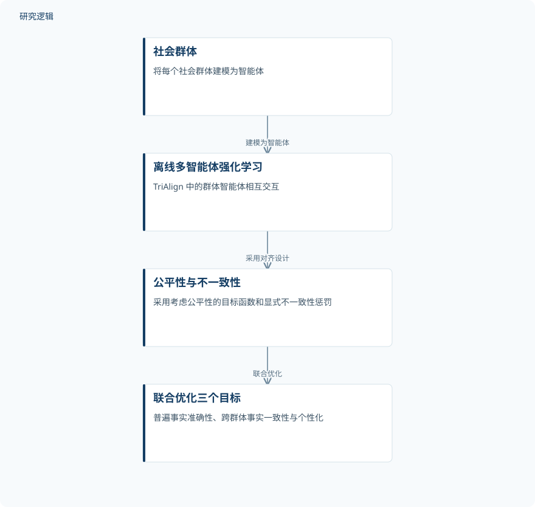

摘要解读
TriAlign：面向个性化大语言模型对齐的普遍真理一致性
TriAlign: Towards Universal Truth Consistency in Personalized LLM Alignment
解读更新 2026-11-27 22:02 · 依据公开摘要整理，未核验全文细节
个性化大语言模型在适应不同用户时，能否对客观问题保持准确且跨群体一致的回答？TriAlign 将这一问题与个性化质量共同纳入对齐目标，为理解模型中的群体间事实差异提供了一个视角。
文章目录
个性化回答为何需要关注事实一致性
个性化大语言模型会根据用户偏好和社会属性调整回答，但在客观任务中，不同社会群体收到的回答可能出现明显的事实不一致，部分群体还可能系统性地得到准确度更低的回答。
摘要指出，现有对齐方法有的忽略个性化，有的主要关注主观偏好对齐，而普遍事实的公平性和一致性在很大程度上被忽视。如何保留个性化，同时避免客观事实随群体而改变，是本文关注的问题。
TriAlign：把三个目标放在一起优化
作者研究了事实不变对齐（Truth-Invariant Alignment，TIA）：在保留个性化的同时，使普遍事实在不同社会群体之间保持一致。
为此，作者提出离线多智能体强化学习框架 TriAlign，将每个社会群体建模为相互交互的智能体。框架通过考虑公平性的目标函数和显式的不一致性惩罚，联合优化普遍事实准确性、跨群体事实一致性与个性化。
依据摘要整理的 TriAlign 对齐思路


仅概括摘要明确陈述的群体建模、对齐设计与联合优化关系，不代表论文原图。
下载 SVG图示关系说明
实线表示相邻阶段的信息流，虚线表示跨阶段联系或反馈。
社会群体 → 离线多智能体强化学习：建模为智能体；离线多智能体强化学习 → 公平性与不一致性：采用对齐设计；公平性与不一致性 → 联合优化三个目标：联合优化
摘要报告：事实表现与个性化的共同改善
摘要报告，在多个不同基准上的实验中，相比强基线，TriAlign 在普遍事实准确性、跨群体一致性和个性化三个目标之间取得了更好的平衡。
具体而言，作者称该方法缩小了社会群体之间的普遍事实差异，同时改善了客观任务表现与个性化质量。摘要未给出具体指标或改善幅度，因此这里不能判断变化的大小。
仅凭摘要还无法判断哪些边界
摘要没有说明涉及哪些具体社会群体、样本规模和基准任务，也未列出强基线的名称及比较细节，因此难以判断结论覆盖了哪些人群与任务。
摘要也没有提供各项指标、统计不确定性或验证设置的细节。以上是当前摘要资料的限制，并不意味着论文没有开展相关分析；跨场景的适用范围仍需结合论文中的完整实验核对。
阅读启发：辨别事实一致与个性化的边界
阅读启发：评估个性化大模型时，可同时关注回答是否符合用户偏好，以及不同群体面对客观问题时得到的事实是否一致、准确。进一步阅读论文时，值得留意作者如何界定普遍事实，以及如何衡量这三个目标之间的平衡。
以上为本站阅读启发与建议，不是论文已验证的结论。